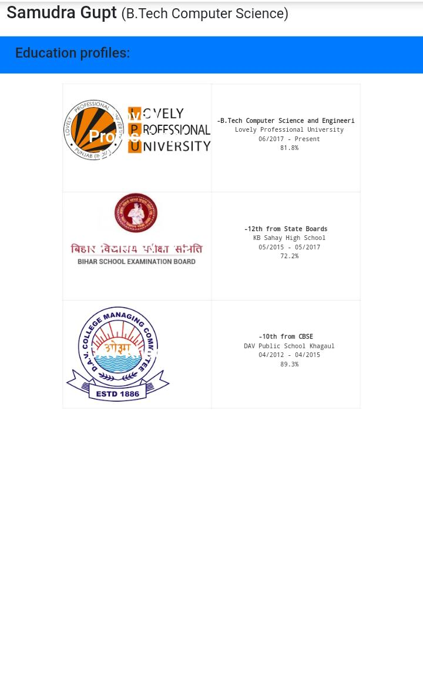
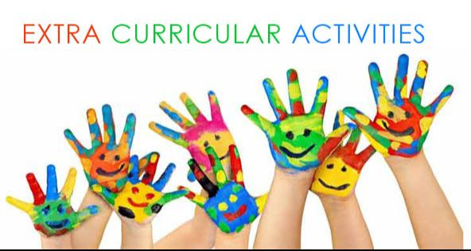

Samudra Gupt
(B.Tech Computer Science)
Dynamic and creative and competitive programmer with CCDSAP Foundation Level certification. An excellent profile on codechef, codeforces and other coding platforms. Interested in software development and testing.

